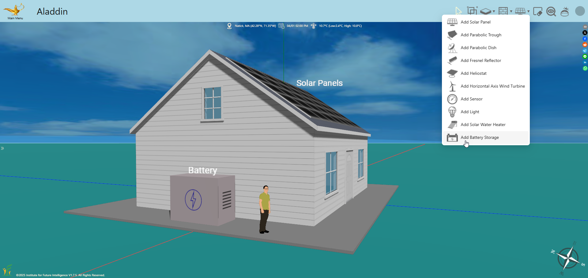
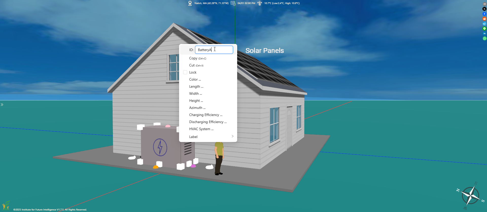
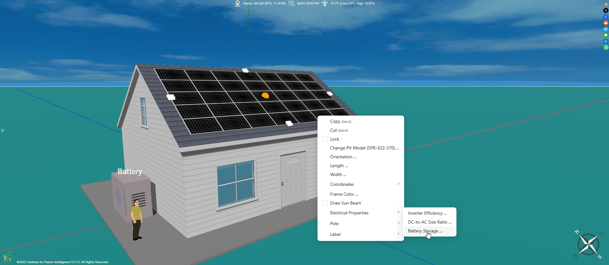
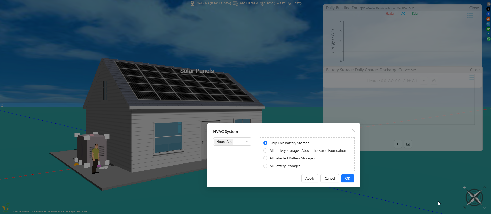
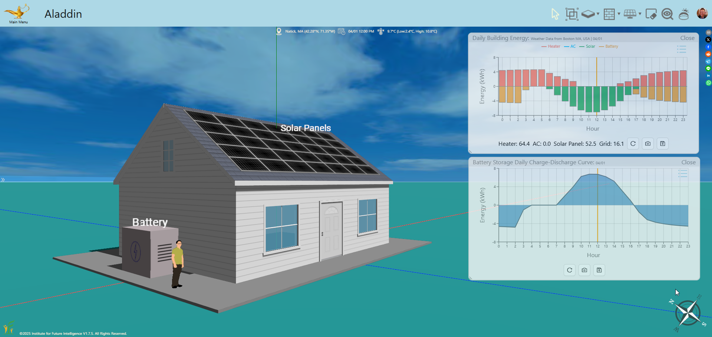
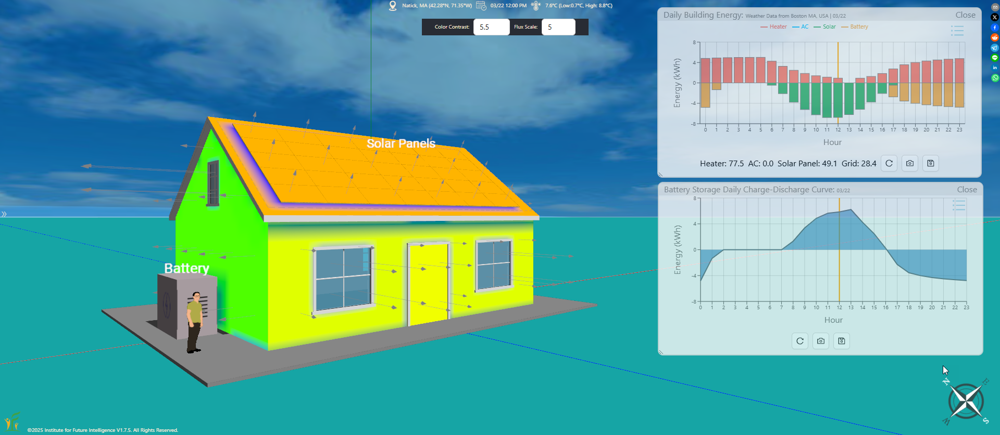
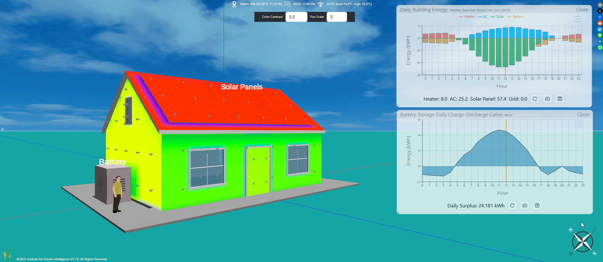
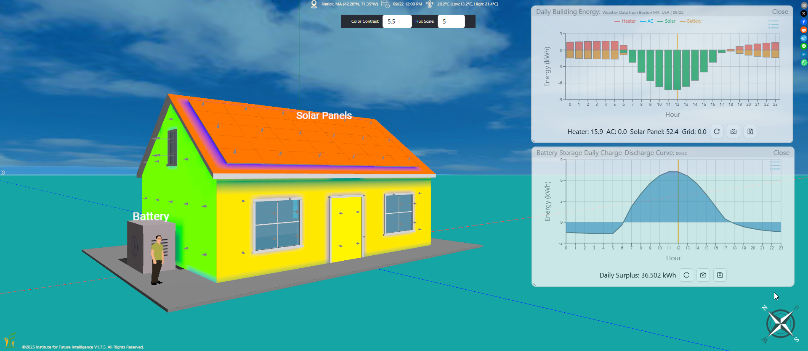
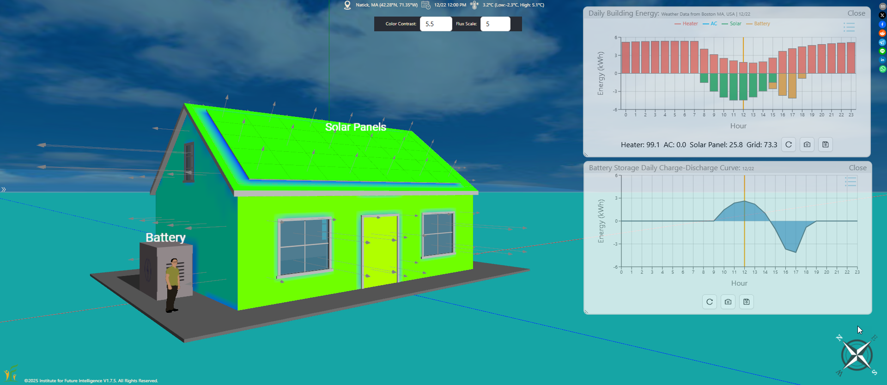
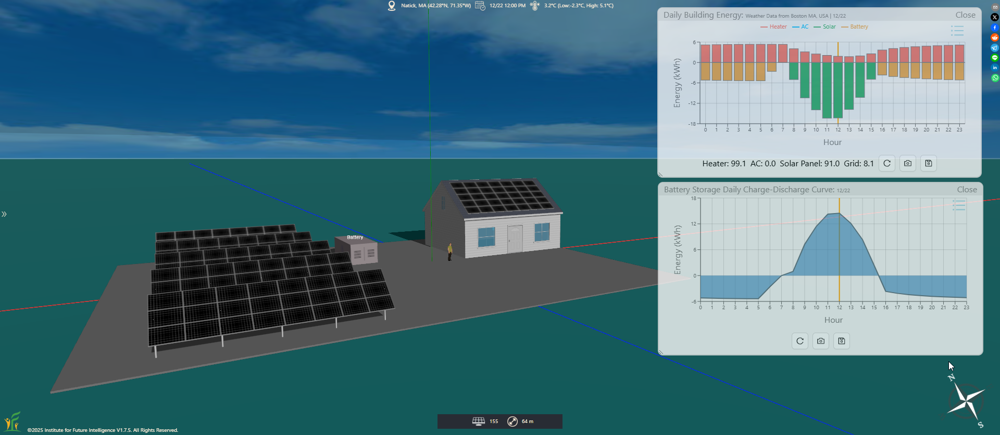

Using Battery Storage for an Off-Grid House
By Charles Xie ✉ and Xiaotong Ding ✉
Listen to a podcast about this article
In the context of building energy, an off-grid house is a building that can function without relying on a public electric grid. While it may not be realistic in the near future, it poses an interesting engineering design challenge. To achieve this goal, we must generate as much renewable energy as possible on the site. As the sun does not shine at night and the wind does not blow all the time, we must use batteries to store the excess electricity generated by solar panels and wind turbines when they work and use the stored energy to power the house later when they do not work.
Adding a battery storage
In Aladdin, a battery storage unit must be placed on top of a foundation. To add a battery storage to a foundation, select the "Add Battery Storage" menu item (as shown in the image below) and then click on a spot of the foundation where you want to install the battery storage. Once a battery storage is added, you can move and resize it freely. You may also set its charging efficiency (the percentage of energy stored in the battery during the charging process compared to the total energy input) and discharging efficiency (the percentage of energy that can be retrieved from the battery during the discharge process compared to the total energy stored) according to the battery manufacturer's specs. These parameters default to 95% in Aladdin (corresponding to low C-rate lithium-ion batteries). Note that sometimes the specs may specifiy only the round-trip efficiency, which measures the energy recovered from a battery after a complete charge and discharge cycle as a percentage of the input energy. In the absence of details, you may use the square root of the round-trip efficiency for both the charging efficiency and the discharging efficiency.

Add a battery storage
Connecting a battery storage to solar panels
The next step is to set an ID for the battery storage for connection later. A default ID is assigned to a battery storage when it is added, but you can change it to something easier to remember.

Set an ID for a battery storage
If you have already added a solar panel array to the roof or the ground, you can then connect it to the battery storage by using the following menu item to open a dialog window from which you can select the battery storage to connect by the ID. For convenience, a battery storage connected to solar panels is often referred to as a solar battery.

Connect a solar panel array to a battery storage
Connecting a battery storage to an HVAC system
The above step establishes only the charging connection (i.e., the input) for the battery. To use the stored energy, we need to establish the discharging connection (i.e., the output). Right-click on the battery and select "HVAC System" from the popup menu. You should see the following dialog window. The dropdown menu allows you to select an HVAC system that the battery will power (assuming that you have already set up an HVAC system for the house). Once you make a selection, the model is completed and ready for simulation analysis.

Connect a battery storage to an HVAC system
Click HERE to view and edit the completed model
Analyzing the charge-discharge cycle of a solar battery
We can now analyze how the battery storage stores energy surplus from the solar panels during the day and powers the house at night. For simplicity, we assume that the energy consumption of the house consists of only heating and cooling usage as these can be calculated from the 3D model of the house using the weather data. On average, however, heating and cooling account for only about 52% of total annual energy use in buildings in the United States. But this discrepancy does not defy the purpose of this design challenge, which aims to reduce overall energy use as much as possible. The following screenshot shows the results for a small house in Massachusetts on April 1 with modest sunshine and mild weather.

How a battery connected to a rooftop solar panel array charges and discharges itself in a 24-hour cycle
In the above graph, the red bars represent the heating energy used at the corresponding hours, the green bars the electricity generated by the solar panels, and the orange bars the electricity discharged from the battery to heat the house. As you can see, the energy stored in the battery is completely depleted after 3 am, from which point the house needs to use the electric grid.
Comparing the performance of a solar battery in four seasons
What about the performance of the solar battery in other seasons? The following images show the results in four seasons. On June 22 and September 22, the house can achieve energy independence, meaning that it does not need to use any energy from the electric grid to maintain its temperature throughout the entire day and night. On March 22 and December 22, however, the house needs to use 28.4 and 73.3 kWh from the electric grid, respectively. This means that the house cannot be completely off-grid as the energy generated by the solar panels are not enough to power it throughout the whole year. To achieve that lofty goal, we need to greatly increase the number of solar panels.




Performance of a solar battery for a house on the 22th of March, June, September, and December
Note that these are the results for a small house in Massachusetts with a south-facing roof covered by solar panels. You may get different results if the house is a large one or in another state with a different climate.
Going off the grid
What would it take for the house to become off-grid completely? Let's focus on December 22 for now and add a large solar panel array (120 solar panels) next to the house. The following image shows that the electricity generated by all the 155 solar panels (rooftop and ground-mounted) are now enough to power the house. If they are sufficient for the house on the shortest day of the year, they should be able to supply energy throughout the entire year. Of course, this may not be a viable solution in the real world as not every homeowner has the space or money to install such a large array of solar panels.

Use more solar panels to achieve the off-grid goal on the shortest day of the year
Click HERE to view and edit the above model
Concluding remarks
Battery storage in Aladdin allows you to explore possibilities of designing building energy systems that may be less dependent on non-renewable energy sources and more resilient when disasters break down the electric grid. This article shows Aladdin's capability towards modeling and simulating microgrids as an off-grid house is the simplest form of a microgrid.